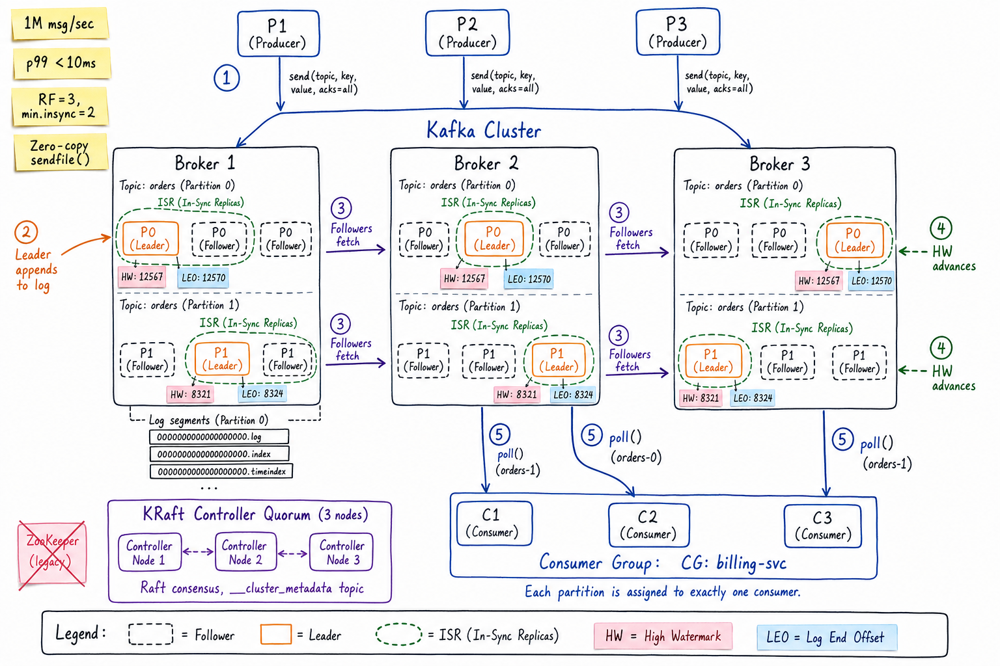
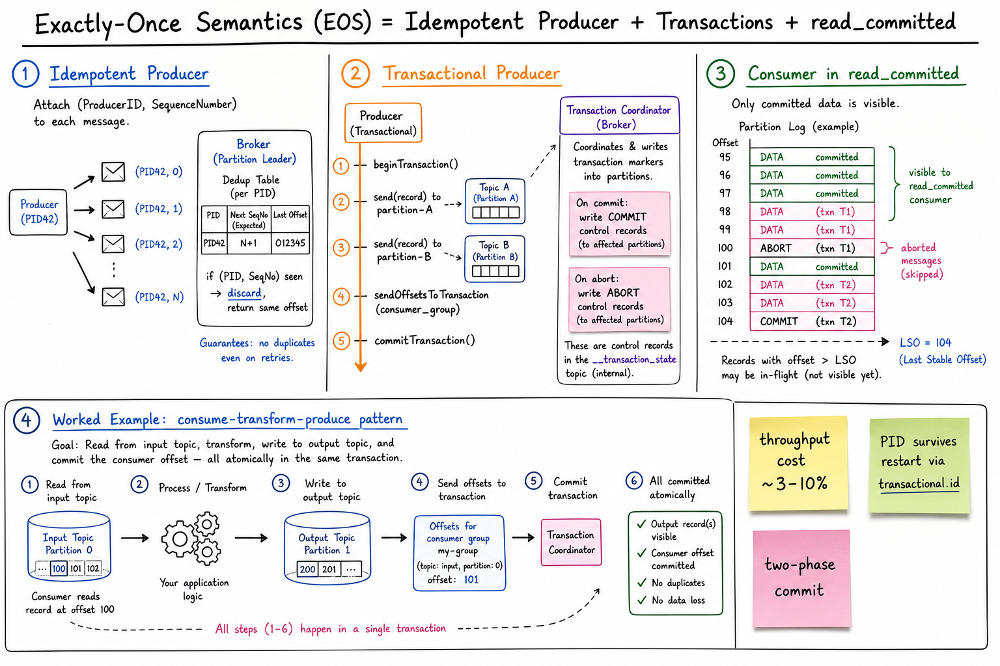

Kafka // Deep Dive
Durable, partitioned, replicated commit log. The canonical event streaming platform: producers append to topic-partitions, brokers replicate via ISR, and consumer groups pull at their own pace. Built on sequential I/O, the page cache, and zero-copy.

Whiteboard architecture: producers send with acks=all to partition leaders across brokers; followers fetch and join the In-Sync Replica set; high watermark advances once all ISR confirm; KRaft controller quorum holds metadata (no ZooKeeper); consumer group pulls with each partition assigned to exactly one consumer.
01 — Identity
Kafka is a durable, partitioned, replicated commit log that you treat as the backbone of an event-driven architecture. Producers append byte messages to named topics; each topic is split into ordered partitions that are replicated across brokers. Consumers pull at their own rate from a committed offset. Kafka sits between services as the asynchronous spine: it absorbs spikes, decouples producers from consumers, gives you replay, and is the source of truth for the event stream that downstream systems (warehouses, search indexes, ML features) materialise.
If you need pub/sub with replay, durable buffering at millions of msg/sec, or event sourcing — reach for Kafka. If you only need short-lived task queues, simpler tools win.
01a — Core Concepts
| Term | Definition | Notes |
|---|---|---|
| Topic | Named logical channel of messages. | Sharded into N partitions at create time. |
| Partition | Ordered, append-only log; the unit of parallelism and ordering. | Ordering is guaranteed within a partition only. |
| Offset | Monotonic integer position of a record in a partition. | Consumer's “cursor”. Committed in __consumer_offsets. |
| Broker | A server in the cluster that stores partitions and serves R/W. | Leader for some partitions, follower for others. |
| ISR | In-Sync Replicas: followers caught up with the leader. | Slow follower → kicked out. min.insync.replicas controls durability. |
| High Watermark (HW) | Last offset replicated to ALL ISR members. | Consumers can only read up to HW; below HW = guaranteed durable. |
| LEO | Log End Offset: next offset to be written. | Always ≥ HW. Leader's LEO ≥ followers' LEO. |
| Consumer Group | Set of consumers cooperatively reading a topic. | Each partition → exactly one consumer in the group. |
| Rebalance | Re-assignment of partitions when group membership changes. | Stop-the-world by default; cooperative protocol avoids it. |
| Log Compaction | Retention by key: keep latest value per key forever. | For changelog/state topics. Tombstones (null value) delete keys. |
| Retention | Time- or size-based deletion of old segments. | Default 7d. Independent of consumption. |
| Controller | The broker that manages metadata and partition assignments. | Single elected role. KRaft = controller is a Raft quorum. |
01b — API / Wire Surface
Producer
producer.send(
topic: "orders",
key: "user-42",
value: bytes,
headers: { ... },
acks: "all" // 0 | 1 | "all"
) -> Future<RecordMetadata{partition, offset}>
producer.flush()
// Transactional / EOS
producer.initTransactions()
producer.beginTransaction()
producer.send(...); producer.send(...)
producer.sendOffsetsToTransaction(offsets, consumerGroupId)
producer.commitTransaction() // or abortTransaction()
Consumer
consumer.subscribe(["orders"], group_id="billing-svc")
while True:
records = consumer.poll(timeout=1s) // batch
for r in records:
process(r)
consumer.commitSync() // or commitAsync()
// Manual assignment (no group coordination)
consumer.assign([("orders", 0)])
consumer.seek(("orders", 0), offset=12345)
consumer.seekToBeginning() / seekToEnd()
Admin
kafka-topics.sh --create --topic orders --partitions 12 --replication-factor 3 kafka-topics.sh --alter --topic orders --partitions 24 # can only grow kafka-consumer-groups.sh --reset-offsets --to-datetime ... --group billing-svc kafka-configs.sh --alter --add-config retention.ms=604800000
Streams API (one-liner)
// Kafka Streams: stateful stream processing as a JAR, not a cluster.
// Stores state in RocksDB locally + a changelog topic for recovery.
streams.stream("orders").groupByKey().count().to("order-counts")
The most important contract is delivery semantics — all three (at-most-once, at-least-once, exactly-once) are just configurations of the same producer/consumer API.acks,enable.idempotence,transactional.id, and consumerisolation.level=read_committedare the four knobs.
02 — When To Use / When NOT
| Use Kafka when… | Avoid Kafka when… |
|---|---|
| You need millions of msg/sec sustained throughput | You only need a couple thousand RPS — Kafka ops overhead isn't worth it |
| Multiple independent consumers must read the same stream | Strict request/response with low latency — use gRPC/HTTP |
| Replay is a requirement (rebuild a service, backfill an index) | Per-message priority or selective ack — use RabbitMQ/SQS |
| You want CDC pipelines, event sourcing, log compaction | You need a job queue with delayed delivery — use SQS/Beanstalkd |
| Downstream consumers run at very different rates | Tiny ops team and no managed offering — Kafka is operationally heavy |
| You need ordering by key (partition by user_id, order_id) | You need global ordering across millions of msg/sec (impossible) |
03 — Architecture (Internals)
┌─────────────────────────────────────┐
│ KRaft Controller Quorum (3-5) │
│ metadata + leader election (Raft) │
└─────────────────────────────────────┘
▲ heartbeat / metadata
│
Producer ──TCP──► Broker 1 (Leader P0, Follower P1)
Broker 2 (Leader P1, Follower P2, P0)
Broker 3 (Leader P2, Follower P0, P1)
▲
│ Fetch (followers pull)
│ Fetch (consumers pull)
▼
Consumers (in groups)
On disk per partition:
/data/orders-0/
00000000000000000000.log (records)
00000000000000000000.index (sparse offset -> file position)
00000000000000000000.timeindex
00000000000000010000.log (next 1GB segment)
...
Active segment is being appended; older segments are immutable.
What makes the architecture work
- Append-only, sequential I/O — modern disks do 600 MB/s sequential, ~200 IOPS random. Kafka chose the right pattern.
- OS page cache as the cache — Kafka does no in-process caching. Linux already does it for free; recent writes serve recent reads from RAM.
- Zero-copy (sendfile) — bytes go page cache → NIC, never crossing into user space. Saves CPU + memory bandwidth.
- Pull model — consumers poll. Backpressure is natural; consumer controls batch size.
- Dumb broker, smart client — broker doesn't track which consumer got what. Offset is the consumer's problem.
04 — Replication & ISR
Partition orders-0, RF=3, min.insync.replicas=2
Broker 1 (LEADER): [m0][m1][m2][m3][m4][m5] LEO=6
Broker 2 (Follower): [m0][m1][m2][m3][m4] LEO=5 ✓ in ISR
Broker 3 (Follower): [m0][m1][m2] LEO=3 ✗ kicked out
High Watermark = min(LEO across ISR) = 5
Consumers read up to offset 4 (inclusive).
Producer with acks=all gets ack when m4 lands on all ISR members.
Replication protocol
- Producer sends to leader; leader appends to local log.
- Followers pull from leader via Fetch RPC (not push) — reuses the consumer protocol.
- Each follower appends and reports its LEO back.
- Leader advances High Watermark =
min(LEO over ISR). - If
acks=all, producer acked once HW ≥ the new offset AND ISR size ≥min.insync.replicas— otherwiseNotEnoughReplicasException.
The ack ladder
| acks | Durability | Latency | Use |
|---|---|---|---|
0 | Fire-and-forget. Loss on broker crash. | Lowest | Metrics/logs you can drop |
1 | Leader confirms. Loss if leader dies before replication. | Low | Acceptable for most pipelines |
all | All ISR confirm. Zero loss if min.insync.replicas ≥ 2 and one broker can fail. | Higher | Payments, orders, anything you cannot replay |
Unclean leader election: when ISR is empty and you allow non-ISR replicas to become leader, you trade availability for durability (you may lose data). Default is false — better to halt the partition than lose acked writes.

Zoom-in: end-to-end exactly-once = idempotent producer (PID+SequenceNumber dedup) + transactions (atomic multi-partition write with commit markers) + consumers in read_committed isolation. Worked example shows the canonical consume-transform-produce pattern where the consumer offset commit is part of the same transaction as the output writes.
05 — Exactly-Once Semantics (EOS)
Layer 1: Idempotent producer
Enable with enable.idempotence=true. Each producer is assigned a ProducerID (PID) at startup. Every message is tagged with (PID, partition, SequenceNumber). Brokers keep a small map per partition; a retry with the same (PID, SeqNo) is deduplicated and the original offset is returned.
- Protects against duplicates from producer retries on transient errors.
- Free with modern clients; usually a no-brainer to leave on.
- Does NOT protect across producer restarts unless you also configure
transactional.id.
Layer 2: Transactions
producer.initTransactions() // recovers PID for transactional.id
producer.beginTransaction()
producer.send(topicA, ...) // multi-partition, multi-topic
producer.send(topicB, ...)
producer.sendOffsetsToTransaction(
offsets={input-topic-0: 105},
consumerGroupId="my-group")
producer.commitTransaction()
A Transaction Coordinator broker writes commit/abort control records into each affected partition. The transaction is durable in an internal __transaction_state topic. On producer restart, transactional.id fences any zombies (older epoch) so a hung old producer can't double-commit.
Layer 3: Read-committed consumers
Set isolation.level=read_committed. Consumers skip records belonging to aborted or in-flight transactions; they only see data up to the Last Stable Offset (LSO).
The cost: ~3–10% throughput overhead and additional latency from coordinator round trips. Use EOS only where duplicate downstream effects are unacceptable (financial pipelines, stream-processing joins). For most pipelines, at-least-once + idempotent receivers is simpler and cheaper.
06 — Compaction vs Retention
| Time/Size Retention | Log Compaction | |
|---|---|---|
| Trigger | Segment older than retention.ms or topic over retention.bytes | Background cleaner thread merges segments, drops superseded keys |
| Keeps | All messages within window, regardless of key | Latest message per key forever (tombstone = null value deletes) |
| Use | Event streams, audit logs, telemetry | Changelog topics (Kafka Streams state), DB CDC snapshots, config |
| Replay model | “Last N days of events” | “Current state of the world, per key” |
Before compaction: After compaction: k=A v=1 off=0 k=A v=3 off=8 k=B v=2 off=1 k=C v=4 off=6 k=A v=3 off=8 k=B v=5 off=9 k=C v=4 off=6 k=B v=5 off=9
You can combine both with cleanup.policy=compact,delete: keep latest per key, but also drop tombstones older than delete.retention.ms.
07 — Consumer Group Rebalancing
The Group Coordinator (a broker) orchestrates assignment. On any membership change (join, leave, crash → heartbeat timeout), it triggers a rebalance.
The three flavours
| Strategy | Behaviour | Pain |
|---|---|---|
| Eager (default before 2.4) | All consumers revoke ALL partitions, then re-assign. Stop-the-world. | Whole group pauses during rebalance — seconds of stall. |
| Sticky | Tries to keep previous assignments to minimise migration. Still stop-the-world. | Better, but still stalls. |
| Cooperative (incremental) | Only the partitions that need to move are revoked. Others keep processing. | Two-phase rebalance, but no global pause. |
Other mitigations
- Static membership (
group.instance.id): a brief disconnect during a rolling restart doesn't trigger a rebalance — the coordinator waitssession.timeout.msfor the same instance to return. - Tune heartbeats: shorter
session.timeout.ms= faster failure detection but more false-positive rebalances during GC pauses. - Avoid long poll loops: if processing a batch takes longer than
max.poll.interval.ms, the consumer is considered dead. Either shrink batches or process async.
08 — The Zero-Copy Send Path
Classic path (copies, copies, copies)
disk -> kernel buffer -> user buffer -> socket buffer -> NIC
(DMA) (read()) (write()) (DMA)
4 context switches, 4 buffer copies, CPU bottlenecked.
Kafka's path (sendfile)
disk -> page cache --(sendfile)--> socket buffer -> NIC
^ ^
└─ stays in kernel space ──────────────┘
2 context switches, 0 user-space copies. CPU free to do real work.
This is why Kafka can saturate a 10 GbE NIC with one or two cores. The price: the data going out is the literal bytes on disk — no transformation, no encryption transformation, no per-consumer headers. TLS (SSL security) breaks zero-copy because the kernel can't encrypt for you; you take the perf hit. Plaintext intra-cluster + TLS on the edge is a common compromise.
09 — KRaft Mode (No ZooKeeper)
| ZooKeeper (legacy) | KRaft (Kafka Raft) | |
|---|---|---|
| What | Separate ensemble (3-5 ZK nodes) holds cluster metadata | 3-5 Kafka brokers form a Raft quorum, store metadata in internal __cluster_metadata topic |
| Partition ceiling | ~200K (ZK's znode/watch overhead) | Millions — 10× more partitions per cluster |
| Controller failover | Seconds (ZK re-election + metadata load) | Sub-second (Raft log replay) |
| Ops | Run + monitor a second distributed system | Single binary, single config domain |
| Status | Removed in Kafka 4.0 | Default and only mode from 4.0 onwards |
The migration story (ZK → KRaft) is a multi-step in-place process for live clusters: bridge brokers, dual-write metadata, then switch controllers. Practical upgrade path, but real ops work.
10 — Tiered Storage
Hot segments (last few hours) sit on broker local SSDs. Cold segments are offloaded to object storage (S3, GCS) by a background tierer and served transparently on read.
- Decouples retention from broker disk size — keep months of data without buying more brokers.
- Failover is faster — new broker doesn't need to replicate years of history.
- Cold reads have higher latency (object storage round-trip), so design your replay workloads with that budget.
- Native in Apache Kafka 3.6+; Confluent and AWS MSK had it earlier.
11 — Schema Registry & Evolution
Kafka values are bytes. Without a contract, producers and consumers drift apart and serialisation is a runtime bug factory. The standard answer:
- Schema Registry (Confluent, AWS Glue) stores Avro/Protobuf/JSON-Schema documents keyed by
subject = <topic>-value. - Producer serialises with a schema, prefixes message with a 5-byte schema ID; consumer fetches schema by ID and deserialises.
- Compatibility modes:
BACKWARD(new schema can read old data — safest for consumer rollout),FORWARD,FULL,NONE.
Rules of thumb for safe evolution: add fields with defaults (BACKWARD safe), never remove or rename a required field, never change a field's type. For breaking changes, route to a new topic (or version the subject name).
12 — Operational Concerns
Sizing
- Partitions per topic =
max(target_throughput / per_consumer_throughput, planned_consumer_count). Start at 12–50, can only grow. - Partitions per broker: keep under a few thousand. Each partition costs file handles + memory + metadata.
- Disk: size for
retention_window × ingress × RF. Leave 30% headroom. - Network: peak ingress × RF dominates inbound; egress = (peak ingress × consumer fan-out).
The metrics that matter
| Metric | What it tells you |
|---|---|
| UnderReplicatedPartitions | Followers falling behind — broker overloaded or network issue |
| OfflinePartitionsCount | Partitions with no leader — producers/consumers stalled. Page on this. |
| Consumer Lag | Distance between HW and committed offset per consumer group |
| RequestHandlerAvgIdlePercent | < 30% = broker saturated |
| LogFlushRate / Time | Disk fsync pressure |
Classic failures
- Broker disk fills → broker shuts down → partitions go under-replicated → cascading load on remaining brokers. Set retention sane, alert at 80% disk.
- Hot partition (skewed key) → one broker pegged, others idle. Add key salting or repartition.
- Consumer can't keep up → lag grows, retention rolls past committed offset → data loss for that consumer. Scale consumers or shrink work per record.
- ZooKeeper / KRaft partition → controller flapping → leader churn → client metadata thrash. Network-level mitigation only.
13 — Usage Patterns (Cross-Links)
Kafka shows up in nearly every “A” cheatsheet on this site. The hard part is usually picking the right partition key.
- Distributed Message Queue — the parent A sheet; Kafka is the canonical reference architecture.
- Ad Click Aggregator — click ingest at millions/sec, partitioned by ad_id; downstream Flink jobs aggregate windowed counts.
- Job Scheduler — per-priority Kafka topics partitioned by tenant_id act as the ready queue between scheduler tier and workers.
- FB Live Comments — comments fan out through Kafka to per-region edge servers that push them to WebSocket clients.
- Notification System — topic per channel (push, email, SMS); workers pull and call the provider with idempotency keys.
- Uber-style ride matching — trip-state events on Kafka power surge pricing, analytics, ETA model retraining.
14 — Alternatives
| System | Pick when… | Trade-off vs Kafka |
|---|---|---|
| AWS Kinesis | You're all-in on AWS and want a managed Kafka-shaped thing without ops | 1 MB/sec/shard cap; clunky resharding; 24h–365d retention; weaker exactly-once story |
| Apache Pulsar | You need true tiered storage from day one + topic-level multi-tenancy + geo-replication | More moving parts (BookKeeper + brokers); smaller community/tooling |
| RabbitMQ | Per-message routing, priorities, work queues, RPC, low throughput | Not a log — no replay; in-memory, harder to durably buffer huge backlogs |
| Amazon SQS | Simple task queue, ≤ 300K msg/sec, no replay, ≤ 14d retention | Polling, per-message visibility timeouts; no partitions / ordering (FIFO is rate-limited) |
| Redis Streams | Already running Redis, modest throughput, in-memory durability is fine | RAM-bound retention; cluster mode constraints on multi-stream ops |
| Google Pub/Sub | GCP-native, pay-per-message, automatic scaling | Push or pull, but ordering is per-key opt-in; long-tail latency variance |
15 — Interview Q&A
Why does Kafka outperform a database for queues?
sendfile() from cache to socket. There's no index maintenance, no row locks, no transaction log on every message. The result: 100–1000× the throughput of a general-purpose RDBMS for this access pattern.What is ISR and how does the High Watermark relate?
acks=all and min.insync.replicas=2, a write isn't acked until at least 2 ISR members have it, so the data survives one broker failure with zero loss. If ISR shrinks below min.insync.replicas, the partition refuses new writes — the system halts producer-side rather than weaken durability silently.How does exactly-once delivery actually work?
beginTransaction → write to multiple partitions → sendOffsetsToTransaction for the consumer offset → commitTransaction. A transaction coordinator writes commit/abort markers; transactional.id fences zombies via epoch. (3) Consumer reads with isolation.level=read_committed, which hides records from aborted or in-flight transactions. The classic use case is consume-transform-produce.How do you guarantee ordering at scale?
user_id, order_id, account_id); hash(key) % num_partitions sends them to the same partition. Global ordering across millions of msg/sec is incompatible with parallelism, so you don't do it. With enable.idempotence=true (or max.in.flight.requests.per.connection=1), retries don't reorder.How does consumer rebalancing work and how do you make it less painful?
group.instance.id for static membership (rolling restarts don't trigger rebalance), tuning session.timeout.ms / max.poll.interval.ms, and avoiding long processing inside a single poll.When would you choose log compaction over time retention?
What changes with KRaft and why does it matter?
__cluster_metadata topic, instead of an external ZooKeeper ensemble. Benefits: ~10× more partitions per cluster (millions vs ~200K), sub-second controller failover, simpler ops (one binary, one config). ZooKeeper is removed in Kafka 4.0; any greenfield cluster should start in KRaft.How would you handle a hot partition?
user_id + bucket(0..N)) to spread load, accepting some per-user order loss; (2) re-partition with a better key; (3) add a custom Partitioner to override hash-based mapping; (4) for inherently hot keys, give them dedicated partitions and a fatter broker.How do you tune for durability vs latency?
acks=all, min.insync.replicas=2 (with RF=3), enable.idempotence=true, unclean.leader.election.enable=false. For lower latency you can drop to acks=1 (loss window during a leader crash). At the broker, log.flush.interval.messages/log.flush.interval.ms control fsync — Kafka deliberately defers fsync to the OS by default, relying on replication for durability. Increasing batch.size + linger.ms on the producer trades latency for throughput.What does “dumb broker, smart client” mean and why was that the design choice?
__consumer_offsets). The broker just serves byte ranges from segment files. This lets the broker do zero-copy sendfile(), scale to many consumers without bookkeeping, and gives consumers control over replay. The cost is on the client: smart batching, offset management, rebalancing, deserialisation. Kafka traded broker simplicity for client complexity and won throughput.